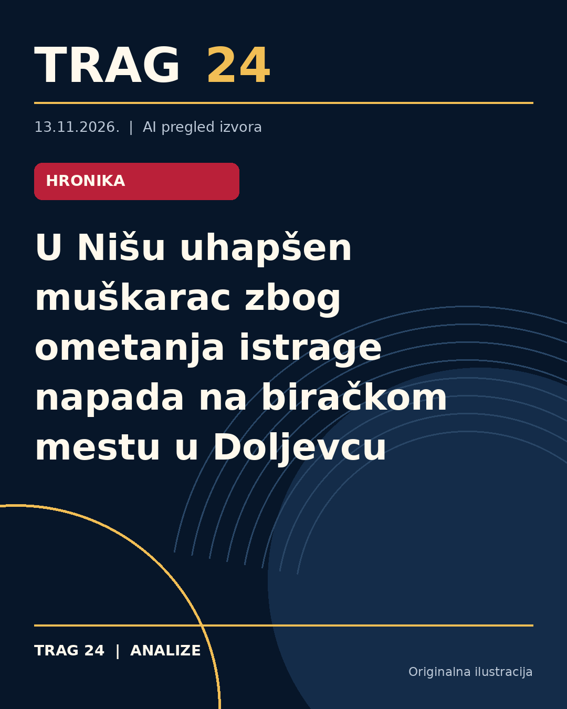

U Nišu uhapšen muškarac zbog ometanja istrage napada na biračkom mestu u Doljevcu

ŠTA SE DOGODILO
23-godišnji M. S. iz Niša uhapšen je zbog sumnje da je pokušao da utiče na svedoka nasilja koje se dogodilo 25. oktobra na biračkom mestu u Doljevcu. On je, kako se sumnja, kontaktirao 24-godišnjeg mladića koji je bio napadnut od strane više osoba i nudio mu novac da ne otkrije identitet napadača policiji i tužilaštvu.
HRONOLOGIJA
Na dan izbora, 25. oktobra, na biračkom mestu u Doljevcu došlo je do nasilničkog incidenta u kojem je više lica napalo članove biračkog odbora, uključujući 24-godišnjeg mladića. Nakon toga, kako navode izvori, M. S. je pokušao da ometa istragu povodom tog događaja. U saradnji sa Osnovnim javnim tužilaštvom u Nišu, policija ga je uhapsila i odredila mu zadržavanje do 48 sati. Protiv njega je podneta krivična prijava. Prethodno su najavljene i krivične prijave protiv trojice osumnjičenih napadača zbog nasilničkog ponašanja na dan izbora.
ŠTA NAVODE IZVORI
Policijska uprava u Nišu i Osnovno javno tužilaštvo preciziraju da je uhapšeni optužen za krivično delo sprečavanje i ometanje dokazivanja, odnosno da je pokušao da utiče na svedoka da ne potvrdi identitet napadača. Studenti koji su bili svedoci događaja navode da su napadači poznati, kao i da su među njima osobe povezane sa lokalnim političkim strukturama. Oni ukazuju i na kontinuirano zastrašivanje i pritiske na članove biračkih odbora i svedoke, kao i na percepciju da reagovanje organa nije adekvatno.
ŠTA JE POTVRĐENO
Potvrđeno je hapšenje i podnošenje krivične prijave protiv M. S. zbog sumnje na ometanje istrage i ponuda novčane nadoknade žrtvi da ne otkrije počinioce. Takođe je potvrđeno da je došlo do fizičkog napada na biračkom mestu 25. oktobra i da se protiv nekih osumnjičenih napadača vode istrage. Policija je u saradnji sa tužilaštvom sprovela mere nakon incidenta.
ŠTA NIJE POTVRĐENO
Iz dostupnih izvora nije potvrđeno ko je tačno izvršio napad, niti detalji o sudbini drugih osumnjičenih. Navodi o političkoj pripadnosti ili motivima napada ostaju predmet navoda studenata i nisu zvanično potvrđeni od strane nadležnih organa. Takođe, izjava da pristalice vlasti kontrolišu izbore nije zvanično potvrđena.
ŠTA OSTАJE OTVORENO: Ostaje pitanje da li će i kako pravosudni organi dalje postupati u slučaju zastrašivanja i pritisaka na svedoke, kao i da li će biti donete mere protiv glavnih osumnjičenih napadača. Takođe nije poznato da li će protiv M. S. biti određen pritvor i kakvi će biti sledeći koraci u istrazi. Uticaj ovih događaja na izborne procese i lokalnu zajednicu ostaje tema koju prati javnost.
Izvori
- https://www.blic.rs/vesti/hronika/uhapsen-mladic-u-nisu-zbog-ometanja-dokazivanja-nudio-novac-zrtvi-napada-da-cuti-o/756127w
- https://www.juznevesti.com/hronika/uhapsen-nislija-osumnjicen-da-je-nudio-nadoknadu-napadnutom-clanu-birackog-odbora-u-doljevcu-da-ga-ne-prepozna-u-policiji/
- https://nova.rs/vesti/hronika/zvao-mladica-nakon-napada-na-birackom-mestu-u-doljevcu-pa-mu-nudio-novac-da-ne-otkrije-identitet-napadaca-uhapsen-muskarac-iz-nisa/
Ova analiza je pripremljena uz pomoć veštačke inteligencije na osnovu javno dostupnih izvora. Navodi izvora nisu nužno nezavisno potvrđeni.